特種車
法規定義
- 道安規則第二條I七：特種車指有特種設備供專門用途而異於一般汽車之車輛，包括吊車、救濟車、消防車、救護車、警備車、憲警巡邏車、工程車、教練車、身心障礙者用特製車、灑水車、郵車、垃圾車、清掃車、水肥車、囚車、殯儀館運靈車及經交通部核定之其他車輛。
- 救護車及救護車營業機構設置設立許可管理辦法
- 車管要點四I(二)：特種車，指行照之牌照號碼欄位載有「特種」字樣之車輛。
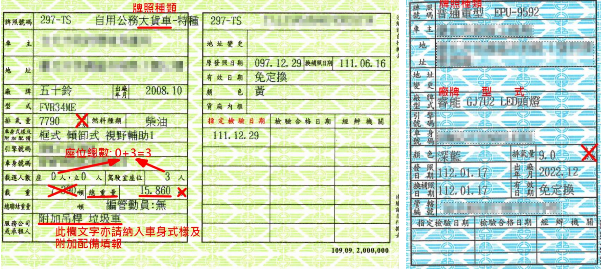 |
| 行車執照 |
本府特種車主要種類（依監理登記）
- 機車：巡邏車、偵防車、消防救災車、消防勤務車。
- 小客車/小客貨：工程救險車、救護車、醫療車、巡邏車、偵防車、警備車、勤務車、勘驗車、消防車、救災車、消防勤務車、消防後勤車、動物救援車、動物稽查管制車、靈車。
- 大客車：警備車、醫療車、特製車。
- 各型貨車及大客貨：工程救險車、資源回收車、垃圾車、清溝車、灑水車、掃街車、水肥車、消毒車、醫療車、動物稽查管制車、警備車、消防車、救災車、消防救災車、消防勤務車、工程車、高空作業車、拖吊車、救濟車。
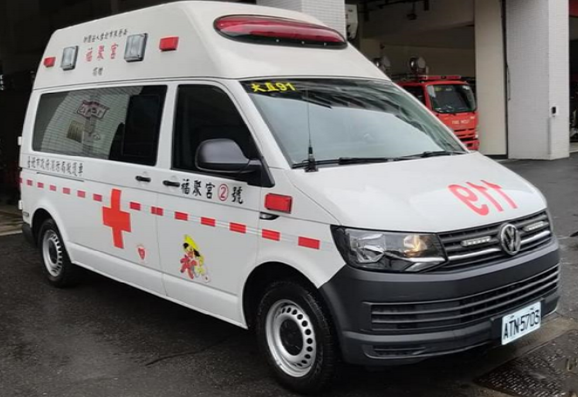 |
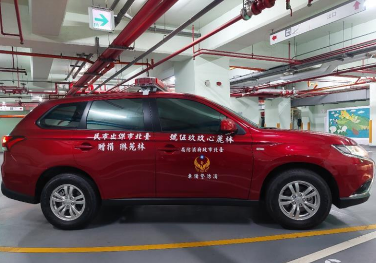 |
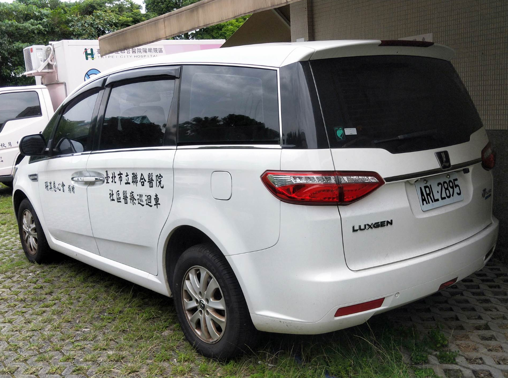 |
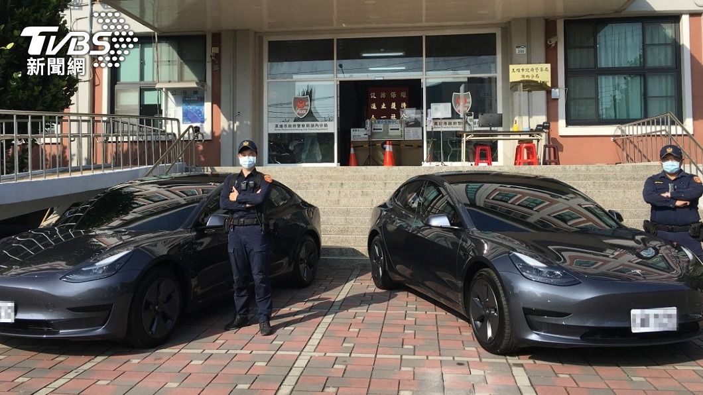 |
| 高頂式救護車 | 消防警備車 | 社區醫療巡迴車 | 偵防車 |
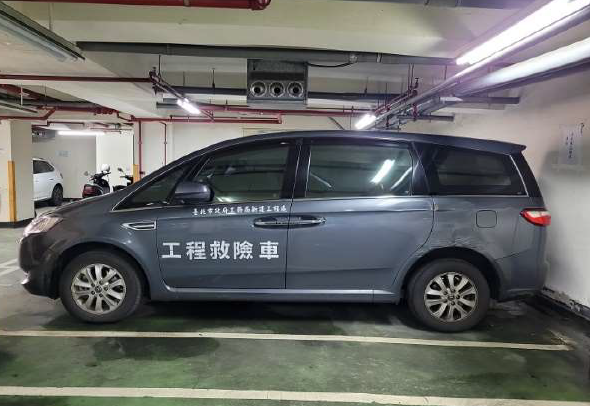 |
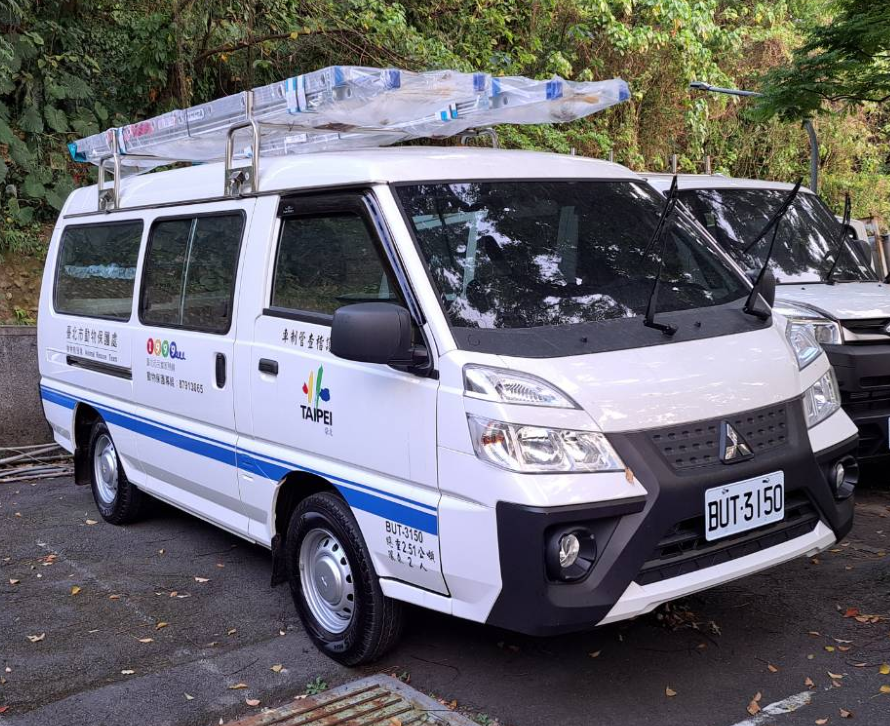 |
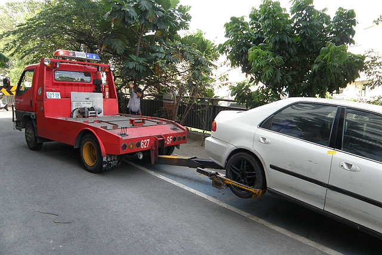 |
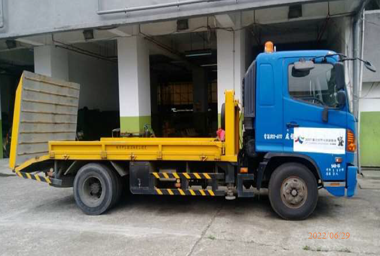 |
| 工程救險小客貨 | 動物稽查管制車 | 拖吊車 | 後斜拖板車 |
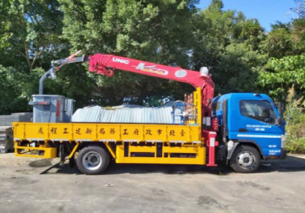 |
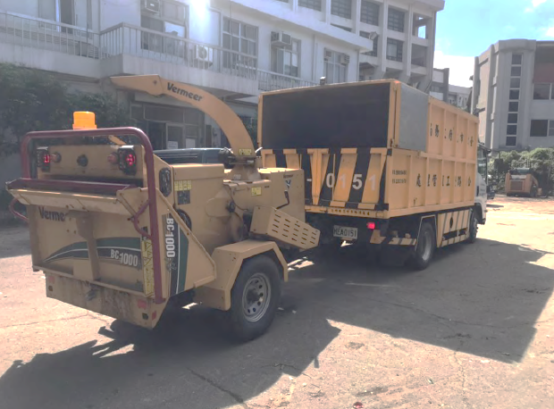 |
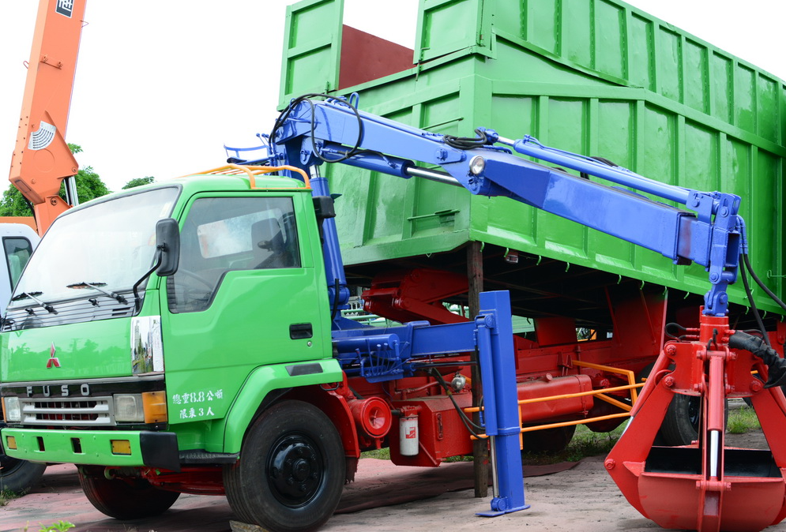 |
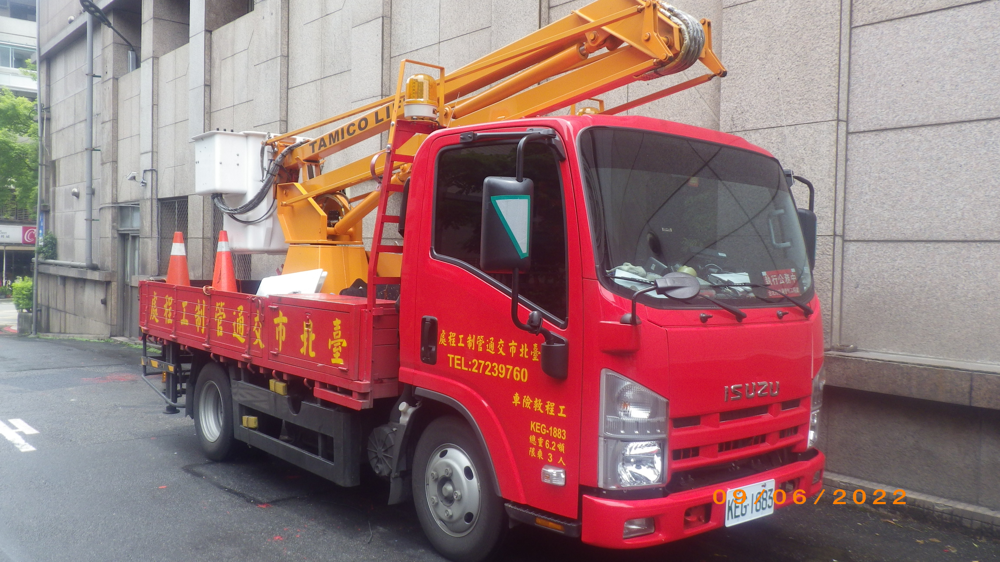 |
| 吊桿車 | 碎木拖卡車 | 抓斗車 | 高空作業車 |
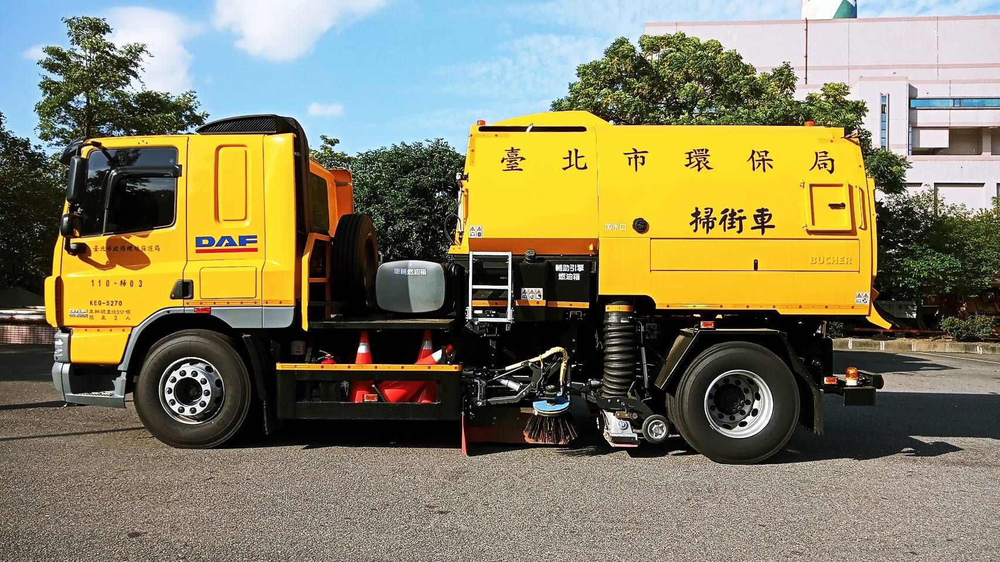 |
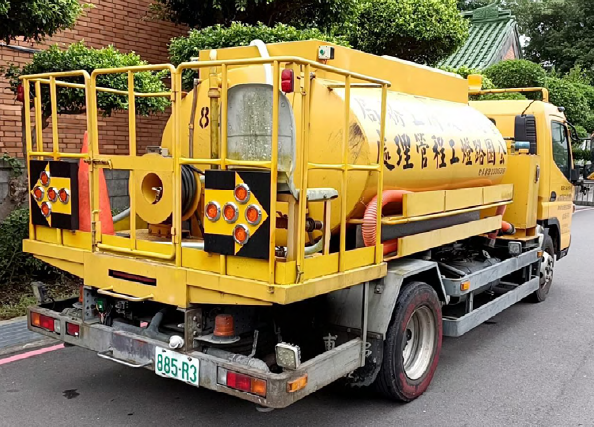 |
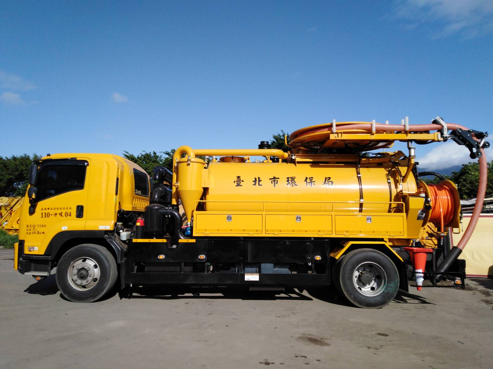 |
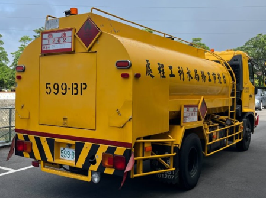 |
| 掃街車 | 灑水車 | 沖吸車 | 油罐車 |
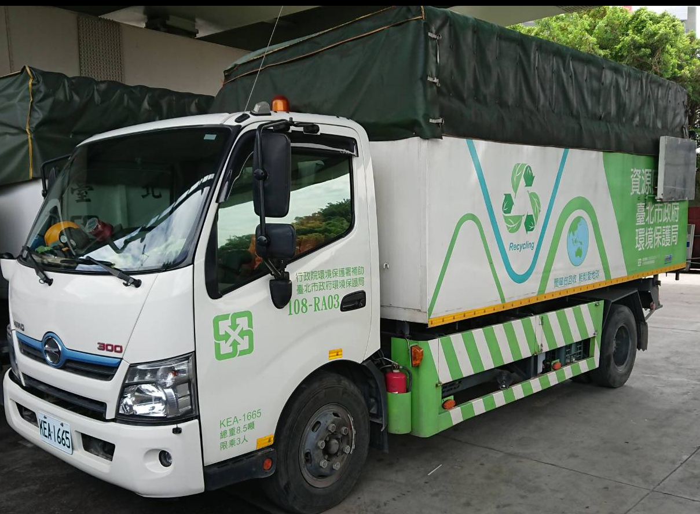 |
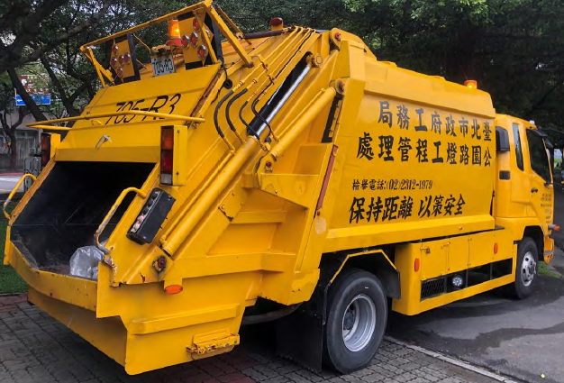 |
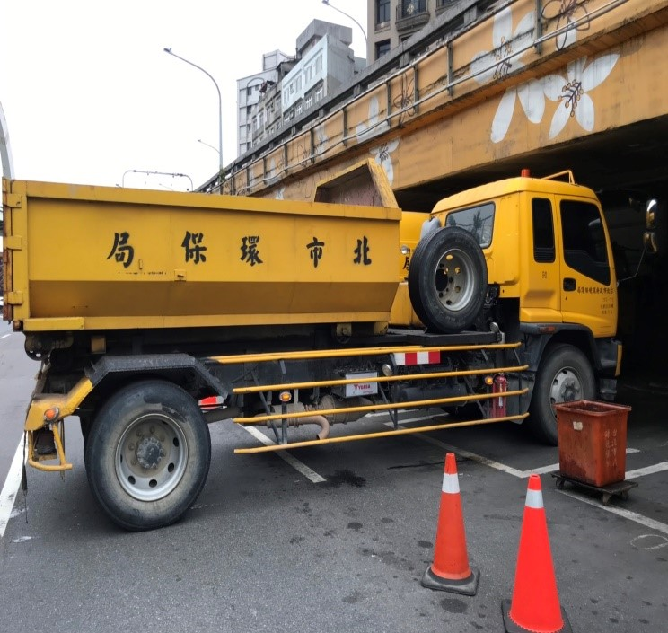 |
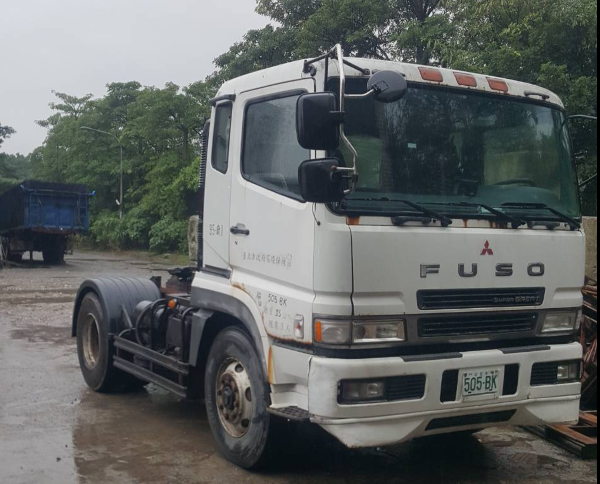 |
| 資源回收車 | 密封壓縮垃圾車 | 分離式垃圾車 | 曳引車 |
特業車
- 車管要點四I(三)：特業車，指非屬特種車，但符合下列要件之一者：
- 大客車以外之各類大型車，或拖車、動力機械。
- 基於特殊業務或工程用途，於車體固定裝設吊桿、高空作業系統、高壓噴灑裝置、液體罐槽、冷凍保溫貨廂、輪椅升降機、車頂警示燈等特殊設備，致難以供一般公務通用之車輛。但特殊設備採活動式裝設拆卸方便，或**僅固定裝設可供通用之貨蓬、貨廂、尾門升降機、防撞桿、置放架等普通設備者，不予認定為特業車。
- 中央指定用途專款購置或民間指定用途捐贈，性質上限供特殊業務使用，且除因有隱密需求外，並於車身漆有該特殊業務用車識別標示或文字，非供一般公務通用之車輛。
- 以受託代辦代管中央或其他政府機關工程或設施之費用所購置，且結束代辦代管時須原車返還，產權非屬本府所有之車輛。
-
- 針對現行第八點第二項第五款所指受託代辦代管中央或其他政府機關工程或設施之費用所購置供各機關管理使用，但產權非屬機關所有而須於結束代辦代管時原車返還，因無法移撥他機關而免納入清查之車輛，納入特業車分類，以符現行管理實務。
特種車、特業車之管理
- 車管要點八：
- 八II(二)：屬備妥特殊機具全時待命，專供救災搶險等緊急事件現場作業使用之特種車，免予納入閒置或低度使用情形清查。
- 八II(四)：以受託代辦代管中央或其他政府機關工程或設施之費用所購置，且結束代辦代管時須原車返還，產權非屬本府所有之車輛。
- 八III：各機關之特種車、特業車，得由各負責清查之一級機關依業務情況另訂閒置、低度使用認定標準。但工程救險特種小客貨、雙廂式五人座以上小貨車，或警消後勤、指揮、警備、消防查察用特種小客車及小客貨，如其改裝程度較低，可供一般公務載運人員通用者，仍應依第一項標準認定之。
-
- 配合臺北市市政大樓已停止公務車統一調派措施，現行第二項刪除第二款，其餘款次配合遞改。
- 現行第二項第五款，配合第四點增列第三款第四目，酌予修正。
- 現行第三項之公務車輛中，工程救險特種小客貨、雙廂式五人座以上小貨車，或警消後勤、指揮、警備、消防查察用特種小客車及小客貨，如其改裝程度較低，可供一般公務載運人員通用，為落實使用效益管理，避免不當閒置，仍應依一般公務車輛之認定標準納入清查，爰增列第三項但書規定。
- 車管要點十四IV：各機關公務車輛車身顏色及加漆標識，應符合道安規則第42條之規定。
- 購車規定二I(二):小貨車（含代用客車）及各一級機關報經本府核定車輛配置數之特種車、特業車，除屬備妥特殊機具全時待命，專供救災搶險等緊急事件現場作業使用之特種車，得視實際需要依規定程序購置外，其餘車輛（含改裝程度較低，可供一般公務載運人員通用之工程救險特種小客貨兩用車、雙廂式五人座以上工程救險特種小貨車，或警消後勤、指揮、警備、消防查察用特種小客車及小客貨兩用車），均應以使用頻繁，經媒合他機關無適當車輛可供移撥者，始得視實際需要依規定程序購置。
-
- 考量實務上部分工程、事業、警察、消防機關特種小客車、小客貨兩用車或雙廂式五人座以上小貨車，雖可供救災搶險等緊急事件現場作業使用，然其改裝程度較低，仍可供一般公務載運人員通用，是否符合現行第二款但書所指「專供……之特種車」規定，不受頻繁使用之限制，不無疑義，爰修正第二款規定，明定是類車輛仍應檢視是否使用頻繁，經媒合他機關無適當車輛可供移撥後，方得視實際需要依規定程序購置，以杜爭議。
- 購車規定四：各機關購置專用車、公務及業務小客車、普通重型以下機車，應以電動車為限。購置其他車種優先擇電動車等低污染車款部分，應依行政院主計總處訂頒共同性費用編列基準表之規定，或本府環境保護局報經本府核定另案公布之相關政策辦理。
- 前項所稱電動車，除既有已購置之過渡性插電式油電混合動力車外，均以領得公路監理機關所核發電動車牌照者為限。
- 各機關既有非電動車報廢汰除期程規定如下：
- （一）專用車及普通重型以下機車：中華民國一百十七年年底前。
- （二）公務小客車：中華民國一百十九年年底前。但變更登記為特種車者不在此限。
- （三）其餘車種：依本府環境保護局報經本府核定另案公布之期程。
-
- 配合本府公務車電動化政策，將現行購置燃油或油電混合專用車及小客車排氣量上限之規定予以修正，並增列第二項及第三項規定。
- 修正後第一項，明定購置專用車、公務及業務小客車、普通重型以下機車，應以電動車為限。其他車種購置低污染或電動化車款部分，則由現行第二點第二項中段移列並酌予修正。
- 於修正規定第二項明定電動車之認定標準，以臻明確。
- 現行第二點第二項前段移列本點修正規定第三項，並酌予修正，明定各機關既有非電動車之各類車種，配合本府淨零排放政策之報廢汰除期程等相關規定。
- 鼓勵工程及事業機關落實工程救險車監理登記：監理機關允許工程單位及公用事業，得將經管小客車外之四輪以上汽車依法登記為工程救險特種車，有利於道路範圍執行工程救險任務時合法開啟車頂警示燈提增交通安全，並視實際執勤方式依道安規則第93條2項 規定排除部分交通罰則，且可依使用牌照稅法第7條第1項第3款 免牌照稅，建議將適當車輛變更工程救險車。
特種車最適規模案報府規定
- 依據111年3月18日府授秘總字第1113003782號府函 ，統一規範報府審查特種業車配置數作業方式。
- 函文要求各類特種（業）車如確有業務需要，考量專業性、安全性，應採「以車配人」原則合理配置（含購置或受贈）車輛及其駕車人力。
- 各機關檢討特種（業）車最適配置及應變備援構想，及所需駕車人力配置方式。要旨包括：
- 應檢附現有特種（業）車輛近3年使用情形，及一級機關所核定各類特種（業）車閒置及低度使用認定標準。
- 應敘明下次報府審查配置數之建議年度，惟最長不得逾5年。
- 所需駕車人力配置方式，除報府核准有案之特種（業）車專案駕駛得予新僱外，其餘一律由機關現職人員檢討因應。
- 報府審查案應以順會方式先行會辦本府秘書處、環保局、人事處、研考會、主計處、財政局（即本府車審小組成員），就受會審查案應依下列分工提供審查意見供本府決策：
- 秘書處：現有車輛使用效益合宜性審查及配置車額數等建議。
- 環保局：配置車輛有無應納管規劃電動化期程及符合環保政策等建議。
- 人事處：配置得新僱專案駕駛人力合宜性審查及配置人力數等建議。
- 研考會：整體車輛及人力配置，有無精實管理及府列管。
- 主計處：逐年汰換計畫審查及預算管控等建議。
- 財政局：公產及財務管理等建議。